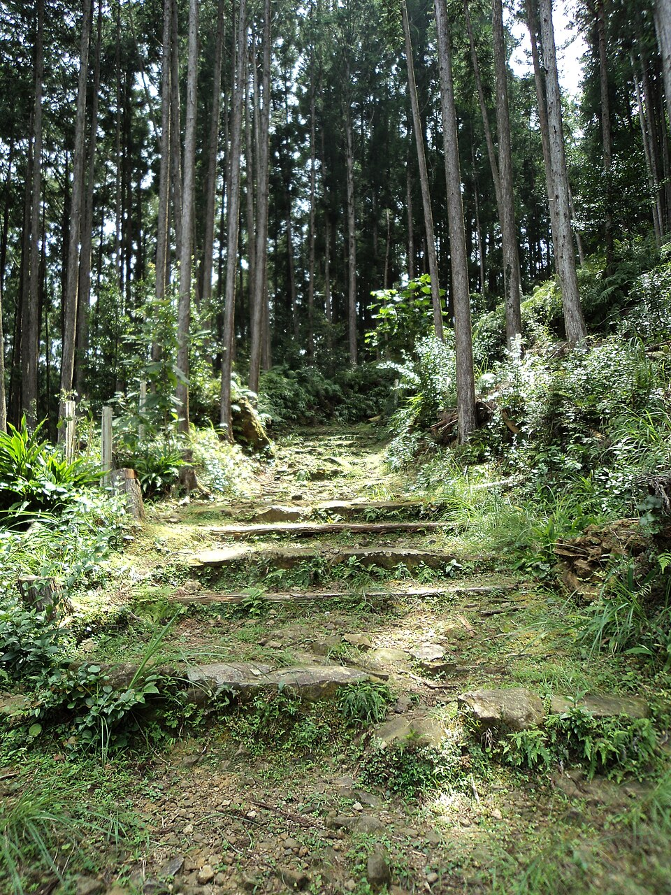

Choose the right type of luggage service
| Option | When it fits | Key condition |
|---|---|---|
| KUMANO TRAVEL daily shuttle | Inn-to-inn walking itinerary booked on its platform | Request at least 20 days ahead; defined pick-up exceptions for Tanabe/Takijiri. |
| Independent Nakahechi transfer (e.g. hakobu:ne) | Independently booked accommodation | Confirm both inns, route, dates and a quote directly; availability is not guaranteed. |
| Tanabe storage | Return trip to the same starting point | Collect within storage hours; this is not a transfer. |
| Courier to final hotel | You can walk with a small pack and collect a larger suitcase at the end | Confirm delivery date and acceptance with the hotel; do not assume next-day delivery to every remote destination. |
If you booked through Kumano Travel
The tourism bureau's daily shuttle is designed around its own accommodation reservations. Its online service generally requires both the pick-up and delivery accommodation to have been booked via KUMANO TRAVEL, with designated first-night pick-up options in Tanabe or Takijiri. Submit requests at least 20 days ahead and plan around the assigned pick-up time.
Official luggage shuttle conditions · How to add a shuttle to your booking
If you booked an inn independently
One independent operator, hakobu:ne, lists Nakahechi destinations including Kii-Tanabe, Takahara, Chikatsuyu, Hongu, Koguchi and Kii-Katsuura. Its FAQ says it accepts enquiries up to the day before pick-up, subject to availability. Request a personalised rate and written confirmation early; do not start your walk relying on an unconfirmed transfer.
The operator lists 08:00 as the bag drop-off deadline and handles payments by card following confirmation. Check its current conditions and whether your accommodation can receive bags.
Independent operator FAQ · Check route and price directly
If you only need to leave a suitcase in Tanabe
The Tanabe Tourist Information Center beside Kii-Tanabe Station lists storage at ¥500 per bag per day, 09:00–18:00, no advance reservation required. It counts the drop-off day and can hold bags up to a month. Station lockers have a shorter limit. This works best if you return to Tanabe rather than continuing straight to another coast.
If your final stay is in Shirahama
The independent operator's published coverage list does not specify Shirahama. Ask explicitly whether it can deliver to your chosen coastal accommodation; otherwise arrange an appropriate courier, storage or collection plan in advance. Keep valuables, identification, medication, rain gear and other essentials with you.
Continue with our transport guide from Kumano to Shirahama to organise the last leg.
Sources and updates
This independent guide is based on publicly available official and operator information, not a first-hand inspection. Confirm the latest dates, prices and service conditions before travel.